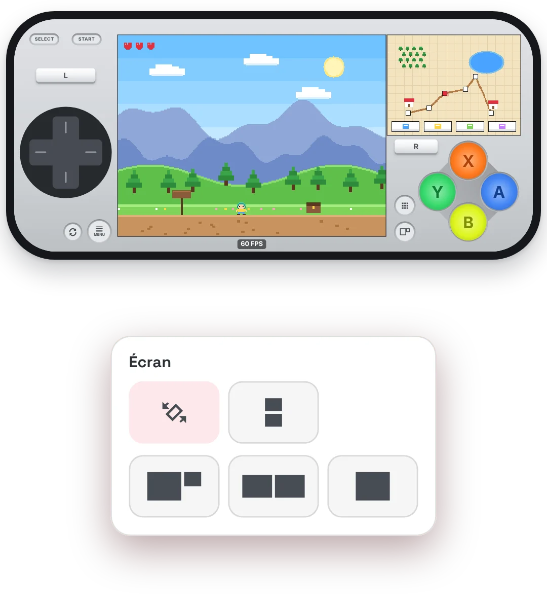
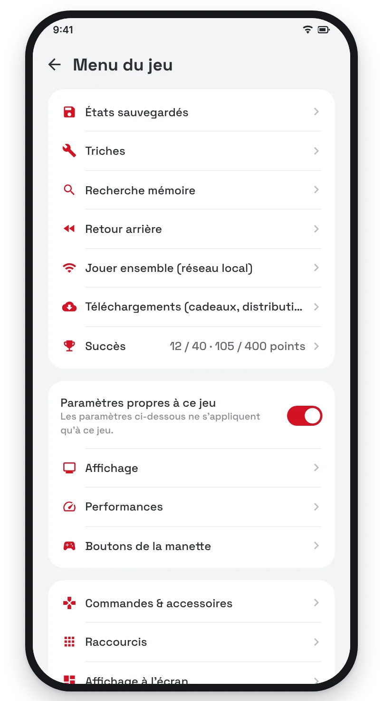
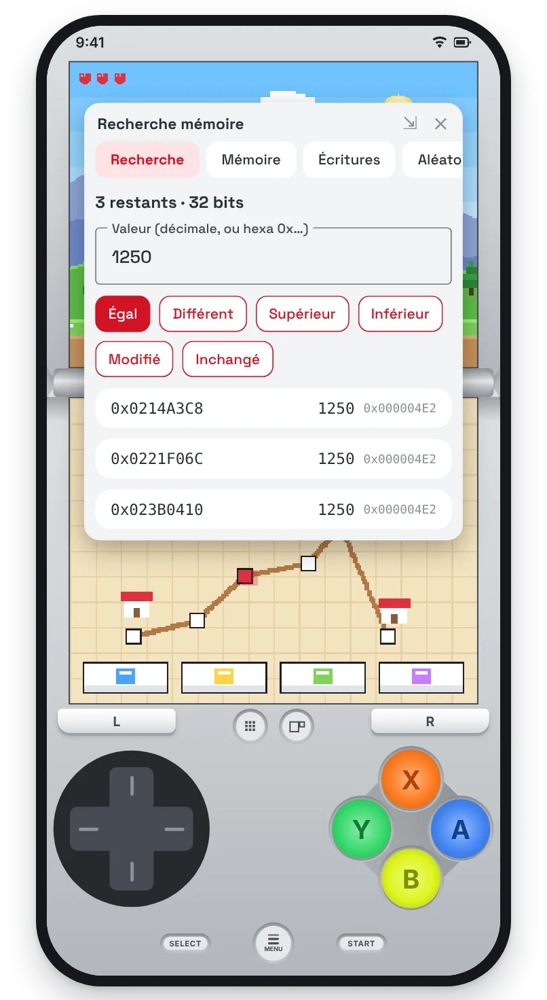
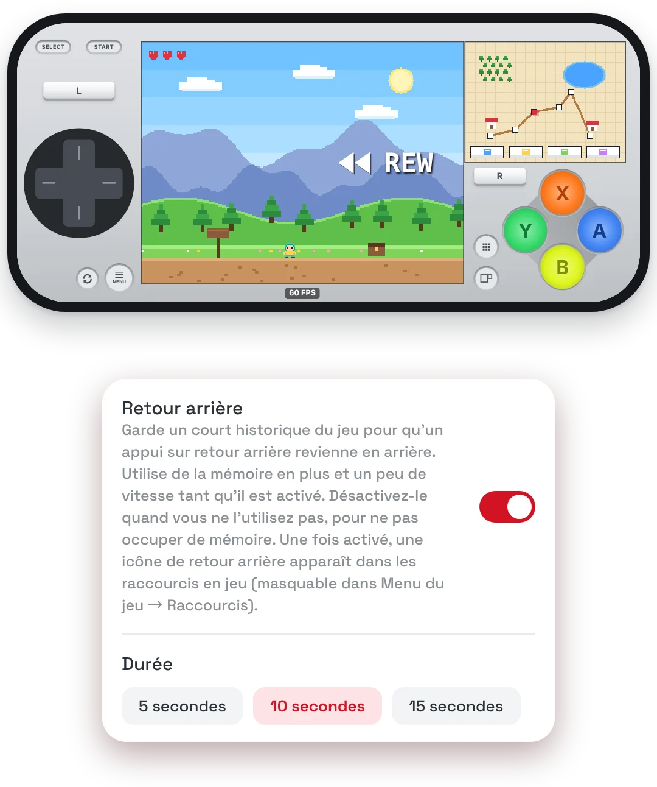

Émulateur NDS au cœur maison de haute précision : 3D HD, jeu local, triche.

Icônes et titres lus dans chaque jeu. Reprenez là où vous en étiez.

CarloDS est un émulateur NDS pour smartphones et tablettes Android. Son cœur d'émulation – processeurs ARM9 et ARM7, graphismes 2D et 3D, audio, sans-fil et BIOS intégré – a été entièrement développé en interne et calibré sur la console d'origine. La plupart des jeux fonctionnent sans fichier BIOS ; le format ZIP est pris en charge.
Empilés, grand + petit, côte à côte ou un seul écran.

Entrée, milieu ou haut de gamme en un geste. 3D jusqu’à 4×.

Sauvegardes d’état, triche, retour arrière, sans fil, téléchargements, succès.

Pas de routeur ? Un point d’accès suffit.

Cherchez des valeurs dans une fenêtre flottante en jouant.

Un geste recule de 5, 10 ou 15 secondes.
